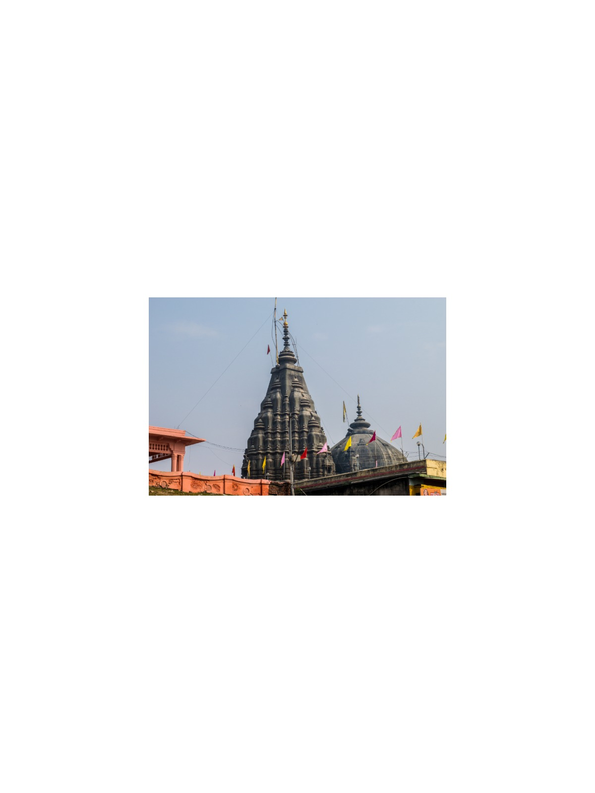
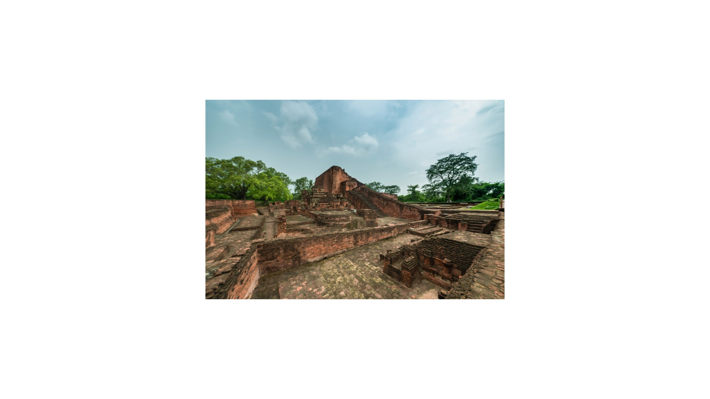
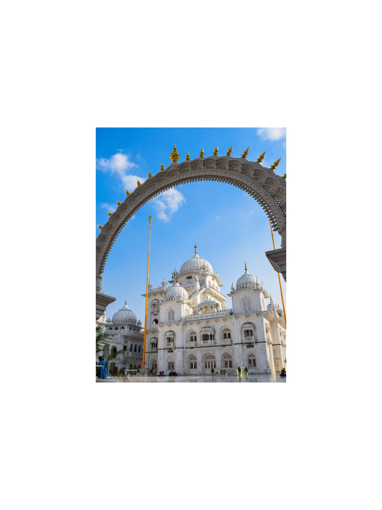
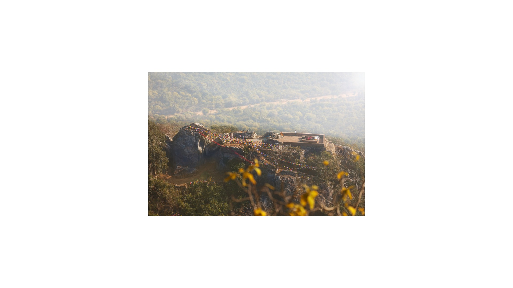

5-Day Sacred India: Ganges, Buddha & Ancient Empires
Delhi · Varanasi · Sarnath · Bodh Gaya · Gaya · Rajgir · Nalanda · Patna
The journey
Anchored by prominent UNESCO World Heritage designations including Mahabodhi Temple at Bodh Gaya and the ancient monastic ruins of Nalanda Mahavihara.
A very full schedule with long driving. Choose it only if you accept a demanding day.
Highlights
- Kashi Vishwanath Temple and Ganges Aarti.
- Mahabodhi Temple in Bodh Gaya and Vishnupad Temple in Gaya.
- Rajgir (Venuvana, Vishwa Shanti Stupa ropeway), Nalanda ruins, and Takht Sri Patna Sahib; Barabar Caves optional.
Day by day
Delhi to Varanasi & Spiritual Ghats
Fly from Delhi to Varanasi (flight not included). Visit Kashi Vishwanath temple corridor and attend evening Ganga Aarti. Overnight in Varanasi.
Varanasi to Bodh Gaya via Sarnath
Sunrise Ganges boat ride and visit Sarnath. Drive to Bodh Gaya (approx. 5.5–6 hours). Overnight in Bodh Gaya.
Bodh Gaya & Gaya Ancestral Rituals
Guided tour of UNESCO Mahabodhi Temple and Bodhi Tree. Excursion to Vishnupad Temple in Gaya for pind-dan rites (the inner sanctum is generally restricted to Hindus; non-Hindu guests view from outside, confirm locally). Overnight in Bodh Gaya.
Rajgir, Nalanda University Ruins & Drive to Patna
Drive to Rajgir (approx. 2.5 hours) for Venuvana and the Vishwa Shanti Stupa ropeway (Griddhakuta / Vulture Peak is reached on foot). Tour UNESCO Nalanda Mahavihara ruins, then continue to Patna (approx. 2.5 hours). Barabar Caves are optional and add 2+ hours. Overnight in Patna.
Patna Heritage & Return to Delhi
Tour Takht Sri Patna Sahib and Patna Museum. Return flight from Patna to Delhi (flight not included).
What is included
Included
- Private air-conditioned vehicle with driver
- Licensed guide (English or Russian)
- Monument entry fees
Not included
- Flights
- Hotels (quoted to your preferred category)
- Meals unless stated
- Tips and personal expenses
- Travel insurance
Indicative; your personal quotation confirms exactly what is included.
Places on this journey
Kashi Vishwanath Ganga Aarti
Ganga Aarti Mahabodhi
Mahabodhi
Vishnupad Temple Vishwa Shanti Stupa
Vishwa Shanti Stupa
Nalanda Ruins
Patna Sahib Dashashwamedh Ghat
Dashashwamedh Ghat Sunrise Boat
Sunrise Boat Bodhi Tree
Bodhi Tree
GriddhakutaThemes
Spiritual & Multi-Faith UNESCO World Heritage Trail
Destinations
Similar journeys
 1 Day
1 Day1-Day Taj Mahal & Agra Fort: Private Day Journey from Delhi
Features two premier UNESCO World Heritage monuments (Taj Mahal and Agra Fort) and showcases Mughal royal fortress architecture and citadel…
View journey → 1 Day
1 Day1-Day Imperial Delhi & Spiritual Heritage: Private Full-Day Tour
Encompasses UNESCO World Heritage landmarks (Humayun's Tomb, Qutub Minar, Red Fort) alongside sacred spiritual sanctuaries of Islam, Sikhism, and…
View journey → 1 Day
1 Day1-Day Jaipur Royal Express: Private Tour from Delhi
Incorporates UNESCO-listed Amber Fort and Jaipur Walled City monuments, centered entirely on Kachhwaha Rajput royal palaces and military…
View journey →